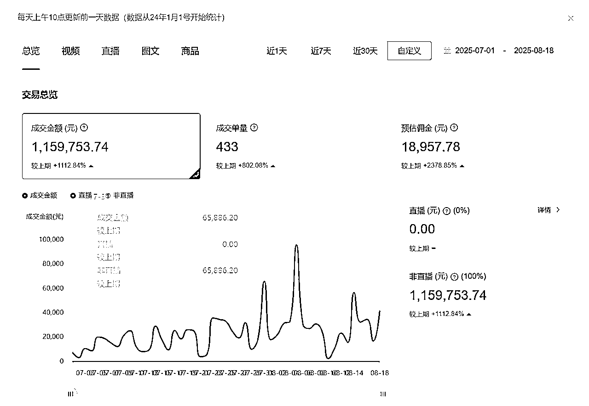
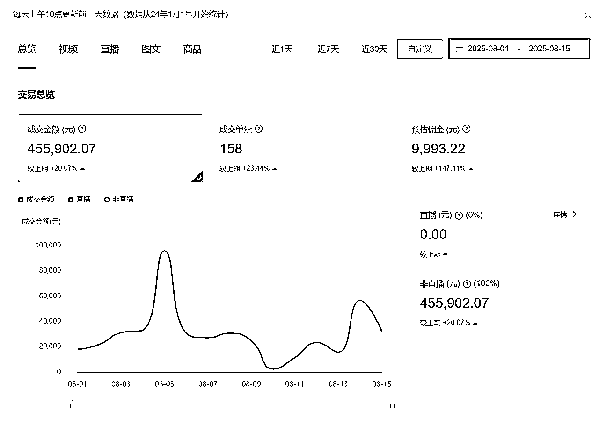
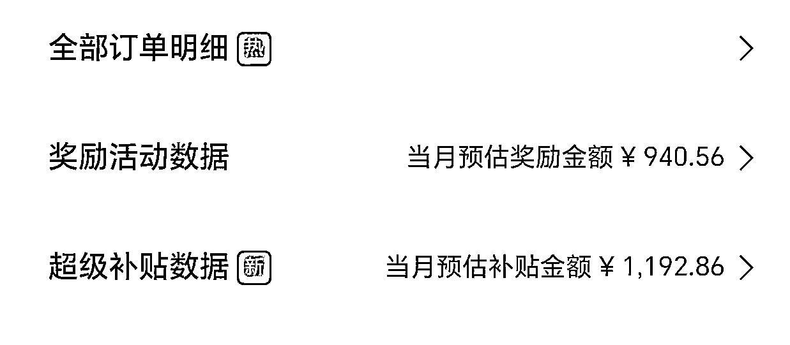
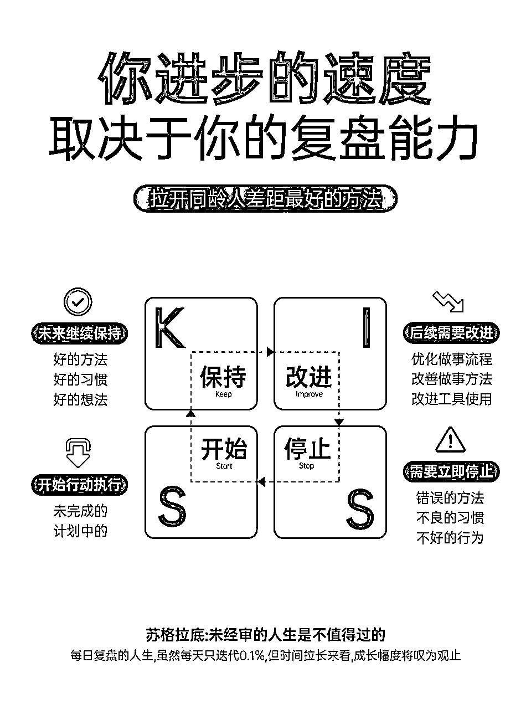
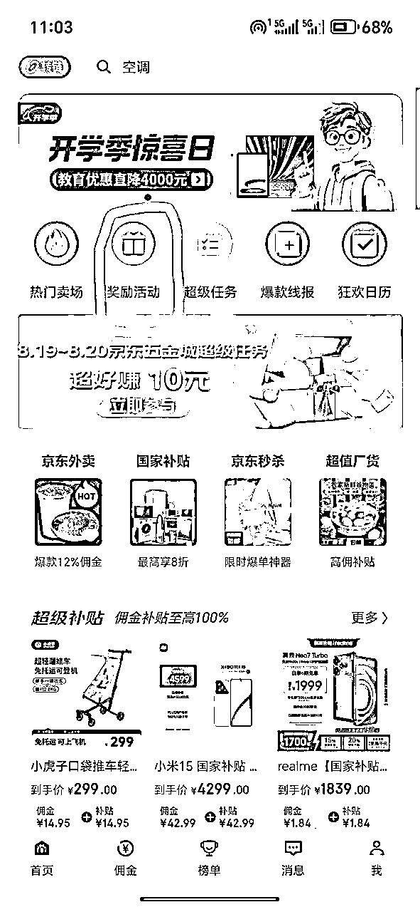

来源：https://ebw2eafswx.feishu.cn/docx/SrkldilbZoL4sRxJJwHc5QAlnWb
大家好，我是小源。
7月初的时候我分享了一篇帖子，根据我的理解拆解了了B站好物悬赏带货这个超级标，详细分析了项目的优势以及新手应该如何开始上手，被评为了精华贴。如果你是纯新手刚开始做，可以先看一下这个帖子，应该会对你有所帮助。
https://t.zsxq.com/UnhvT
这次分享的主题是我在这两个月以来的进步和感悟，对于已经开始做B站好物悬赏带货项目但还有突破的朋友，希望能给你们带来帮助，纯新手朋友也可以借鉴。
先说一下我取得的成绩，在经历了6月份半个月的起步期后，在7月份和8月份迎来了爆发式的增长。从7月1号到8月18号共49天的时间预估佣金为1.89W，其中8月1号到15号半个月佣金近一万。


除了带货佣金之外，还有这两个月在平台（淘宝、京东平台）获得的补贴和奖励金额也有3k左右，这也是后面我会提到的一个点。

两个月时间，佣金收入从半月700到半月近万，成果翻十倍的背后，我做了哪些正确的事？
在拆解B站好物悬赏带货超级标的时候，我对标了很多账号，也分析总结了很多视频风格，最后总结出8种不同类型的视频，这些不同类型的视频我也基本都尝试了。
从我的实战接结果来看，真人配音+实拍视频效果最好，其次是真人配音+录屏，AI配音在好价线报类视频中会有概率带来不错的转化率，但是大部分都是后劲不足。
在我看来，无论是现在的B站好物带货还是之前的知乎好物带货本质就是消费决策。
我们用自己擅长的相对专业的知识以视频或者图文的形式输出，受众用户在看到后感觉不错从而下单，这里的核心是信任度，信任度越高转化率也就越高。
即便是有时间限制追求短期爆发的线报类视频也是在帮别人做消费决策，后面账号做大粉丝量增多也是信任度增加的体现。
B站好物悬赏带货项目的本质是消费决策，消费决策的核心是信任度。那么，如何增加受众群体对我们的信任度？
我们输出内容的载体是视频，所以信任度和视频类型息息相关。视频类型又可分为人的方面和物的方面。
人的方面可以划分为真人出镜，真人配音，AI配音，这三个的排序我认为是：真人出镜＞真人配音＞AI配音。
物的方面可以划分为实拍和云评测，效果上肯定是实拍实测大于云评测。
所以信任度最高的视频是真人出镜+实拍实测结合，相应的购买转化率也就越高，带货收入自然会更高。这基本就是头部up的账号打法。这种视频还有一个好处，播放量都很高，也能快速的增长粉丝，会有接商单的机会。商单收益普遍是要大于佣金收入的，这是B站好物悬赏带货收益再次跃升的一个方式，也是能把这个项目穿越周期长久去做的方式。
我的收益取得快速增长的主要原因就是我果断放弃了AI配音，采用真人配音，并且利用手中可以利用的产品实拍，自己没有的可以去实体店拍的就去实体店拍。采用真人配音+产品实拍或者真人配音+录屏讲解的方式制作视频素材，结果立竿见影。
肯定会有人说，有羞耻感不想真人配音怎么办，不敢去线下实体店拍怎么办。这时候自己问自己一句，想不想挣钱？在试过几次之后就不会有太大问题了。在我看来，除了真人出镜之外其他的挑战都不叫挑战。
这里我并是全盘否定AI配音，也不是说这种类型视频不能做。AI配音很适合刚开始做这个项目的新手，也有利用纯AI配音做到单月百万甚至千万GMV收益的账号。
最新一期的百万UP主榜单中，排名第37的 “Super好价君” 和排名第62的“大白讲数码”都是用的AI配音，这都说明AI配音是可行的，要知道这次榜单一共就80个人。
从账号成功的概率上，从项目的本质是消费决策这一角度上，从后续商单变现的机会和穿越周期取得更大天花板的发展上，真人出镜+商品实拍都是更优甚至最优的选择。这也是我后面需要改变和学习的地方，我现在也只是做到了真人配音+商品实拍，我下一步的发展方向就是往专业化方向靠拢。
从AI配音转到真人配音，从几张图片到录屏讲解和尽可能实拍实测，这就是让我收益翻十倍以上的最大秘诀。
无论什么视频，播放量都是我们获得收益的根本，没有播放量就没法谈收益。我不谈任何投流，我也没用过投流，只说自然流。
上面说过的视频类型会影响流量，真人出镜的视频就是比AI配音的视频播放量高，产品实拍就是比云评测播放量高。除了视频类型之外，还有一个很关键的点，就是热点话题。
热点话题可以是具体产品带来的热点，也可以是季节性的热点。
具体产品热点典型的就是新品发布，越是重磅的产品其发布会流量越高。比如手机品类，9月份的iPhone 17新品发布会，接下来的小米16、iQOO15等新品，再接下来的华为Mate80发布会都是热点。笔记本电脑联想拯救者、来酷斗战者的发布，华硕天选6系列的发布等。还有大疆扫地机器人新品的发布，格力云佳Pro空调新品的发布，容声511冰箱新品的发布等。每次新品发布都是热点，这些话题会自带流量，抓住这些热点就会有不错的流量。
季节性热点比较典型的就是夏天空调、风扇品类；冬天加湿器、壁挂炉品类等。服装赛道更要考虑这个因素了，夏天卖羽绒服肯定没有冬天效果好得多。
此外，还有618、双十一、年货节这种大型活动热点，在这期间但凡在视频标题或者封面添加“618”、“双十一”等字眼都会增加播放量。
我们要根据账号定位、视频类型、带货产品判断属于自己的热点并且迅速制作视频抓住热点，这往往能取得事半功倍的结果。
我起步就是靠抓住一场发布会的热点开始慢慢有稳定收益，能够放大也是抓住了属于我的热点。
定期复盘是所有项目都必须具备的一环，能够及时总结经验、查漏补缺。正好前两天在朋友圈看到潇墨在讲复盘，有句话触动到了我：你进步的速度，取决于你的复盘能力。

说到复盘，我也是有些惭愧的，这一方面我做的并不是很好，没有制定过详细的复盘计划，也没有系统的复盘过。但我会不定期查看我的视频播放量、互动量，看看哪些内容受欢迎，也会每天看订单情况，看看哪些品类哪些型号卖得比较好。后面就重点更新受欢迎的内容，带货也选择出单量比较高的品，对于不受欢迎的内容和几乎不出单的品就暂时性放弃。
不断复盘、不断学习、不断改进，这会让我们变得更好，进步的更快。这里也与君共勉，下次我再更新长文的时候一定要重点分析复盘。
文章开头我也提到了这一点，这是我们带货额外获得平台补贴或奖金。这个钱是淘宝或者京东官方给的奖励，奖励我们给他们的平台引流增加营业额，这是一份很客观的收入。
以我8月份为例，抛开佣金不算，单平台给的奖励就超2k了，这种奖励在618、双十一这类大促活动中给的更多，奖励活动也更多。所以一定要多参与，无论这些活动的品类自己带不带都要报名，因为平台有锁佣金制，有时候订单会出现你跟本没带过的品类，这在大促活动可以发红包的时候出现的情况会更多。
打开京粉APP或者淘宝联盟APP，首页找到奖励活动点击进去，能参加的活动全部参加。有些默认参加，有些是需要报名。

在你看到这里的时候立刻马上去APP上看看这些奖励活动，全部参加上，尤其是需要报名参加的，一定要报名参加。
佣金收入是我们用劳动换来的成果，奖励收入则是平台给我们的奖励和补贴，有时候奖励会给我们带来意想不到的收获。
我把坚持放在了最后，因为几乎所有人都说我们要坚持，我们也都知道干任何项目都需要坚持。这也是我们一直自我鼓励却很难做到的点。
我正式进入生财之前，在3天体验卡的课程学习中，从纪中老师那里学到两句话：
1、普通人赚钱最快的方式是信息差
2、信息差+执行差=可能成功
第一句很好理解也很容易解决，在生财里从来都不缺少信息差，反而是太多了，多到你这个也想干那个也想干。但是执行差决定了你能否利用好掌握的这个信息差赚到钱。
我不敢说我有多努力，我也确实没有全身心投入这个项目，因为我有自己的主业工作，也有被家里逼婚的压力去相亲。但我每天都会留给B站好物这个项目至少一个小时。
现在这个项目我做了不到70天，已经更新了超过150个视频，没有一天断更过。即便是中间感冒重咳嗽也坚持做真人配音+录屏的视频，一个三四分钟的视频因为咳嗽录了近半个小时才能剪出来，我的成功也是靠坚持换来的。
对于专业化定位，重点是脚本文案和视频质量，没必要也做不到日更，坚持打磨内容就好。除此之外我都建议大家日更，每天坚持1-3个视频。
尽可能的缩短执行差，会让我们更接近成功。
上面五点就是我用两个月的时间做到收益翻超过10倍的“秘诀”，这里并没有什么不可愉快的高山和短时间难以掌握的技巧。就是靠改变视频类型、复盘总结、抓住热点再加上坚持。
现在是项目的红利期，也是备战双十一的绝佳时期，希望这篇内容可以帮助到大家，有什么问题欢迎和我交流~
苦苦坚持，痴痴等待，艳艳花开。希望你我可以在B站好物悬赏带货这个项目上攫取更大的收获。